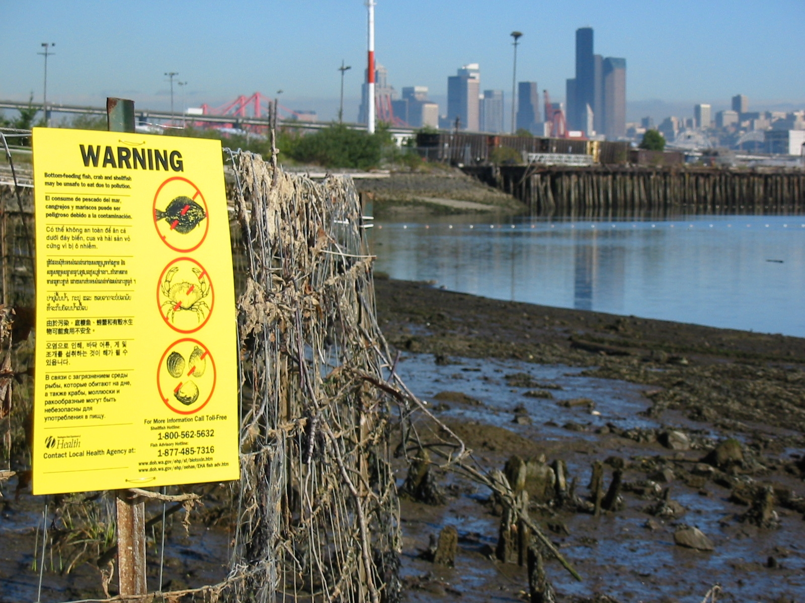

Page 4
The Washington Department of Health issued a fish advisory recommending no one eat crab, shellfish, and fish from the Lower Duwamish Waterway. Salmon (except blackmouth salmon) are the least riskiest choice because they spend a short time in the Duwamish River.
